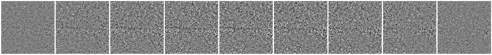

Representational Geodesic
NOTE: This notebook and the geodesic method are still under construction and subject to change. They will run, but might not find the most informative geodesic.
[1]:
import numpy as np
import matplotlib.pyplot as plt
# so that relative sizes of axes created by po.imshow and others look right
plt.rcParams['figure.dpi'] = 72
%matplotlib inline
import pyrtools as pt
import plenoptic as po
from plenoptic.tools import to_numpy
%load_ext autoreload
%autoreload 2
import torch
import torch.nn as nn
# this notebook uses torchvision, which is an optional dependency.
try:
import torchvision
except ModuleNotFoundError:
!pip install torchvision
import torchvision
import torchvision.transforms as transforms
from torchvision.transforms.functional import center_crop
from torchvision import models
device = torch.device("cuda" if torch.cuda.is_available() else "cpu")
dtype = torch.float32
torch.__version__
/home/billbrod/miniconda3/envs/plen_3.10/lib/python3.10/site-packages/tqdm/auto.py:21: TqdmWarning: IProgress not found. Please update jupyter and ipywidgets. See https://ipywidgets.readthedocs.io/en/stable/user_install.html
from .autonotebook import tqdm as notebook_tqdm
[1]:
'2.0.1+cu117'
Translation
[2]:
image_size = 64
einstein = po.load_images('../data/256/einstein.pgm')
einstein = po.tools.conv.blur_downsample(einstein, n_scales=2)
vid = po.tools.translation_sequence(einstein, n_steps=20)
vid = center_crop(vid, image_size // 2)
vid = po.tools.rescale(vid, 0, 1)
imgA = vid[0:1]
imgB = vid[-1:]
pt.image_stats(to_numpy(imgA))
pt.image_stats(to_numpy(imgB))
print(imgA.shape)
print(vid.shape)
# convention: full name for numpy arrays, short hands for torch tensors
video = to_numpy(vid).squeeze()
print(video.shape)
pt.imshow(list(video.squeeze()), zoom=4, col_wrap=6);
Image statistics:
Range: [0.079997, 1.000000]
Mean: 0.488417, Stdev: 0.149090, Kurtosis: 3.337172
Image statistics:
Range: [0.000000, 0.741736]
Mean: 0.354389, Stdev: 0.212748, Kurtosis: 1.725743
torch.Size([1, 1, 32, 32])
torch.Size([21, 1, 32, 32])
(21, 32, 32)
Spectral models
Computing a geodesic to reveal excess invariance of the global Fourier magnitude representation.
[3]:
import torch.fft
class Fourier(nn.Module):
def __init__(self, representation = 'amp'):
super().__init__()
self.representation = representation
def spectrum(self, x):
return torch.fft.rfftn(x, dim=(2, 3))
def forward(self, x):
if self.representation == 'amp':
return torch.abs(self.spectrum(x))
elif self.representation == 'phase':
return torch.angle(self.spectrum(x))
elif self.representation == 'rectangular':
return self.spectrum(x)
elif self.representation == 'polar':
return torch.cat((torch.abs(self.spectrum(x)),
torch.angle(self.spectrum(x))),
dim=1)
model = Fourier('amp')
# model = Fourier('polar') # note: need pytorch>=1.8 to take gradients through torch.angle
[4]:
n_steps = len(video)-1
moog = po.synth.Geodesic(imgA, imgB, model, n_steps, initial_sequence='bridge')
optim = torch.optim.Adam([moog._geodesic], lr=.01, amsgrad=True)
moog.synthesize(max_iter=500, optimizer=optim, store_progress=True)
/home/billbrod/Documents/plenoptic/src/plenoptic/tools/validate.py:178: UserWarning: model is in training mode, you probably want to call eval() to switch to evaluation mode
warnings.warn(
Stop criterion for pixel_change_norm = 1.07149e-02
24%|████▎ | 119/500 [00:00<00:01, 202.78it/s, loss=8.3254e+01, gradient norm=1.0443e-01, pixel change norm=1.08467e-03]/home/billbrod/Documents/plenoptic/src/plenoptic/synthesize/geodesic.py:193: UserWarning: Pixel change norm has converged, stopping synthesis
warnings.warn("Pixel change norm has converged, stopping synthesis")
26%|████▋ | 130/500 [00:00<00:01, 204.98it/s, loss=8.3254e+01, gradient norm=1.0443e-01, pixel change norm=1.08467e-03]
[5]:
fig, axes = plt.subplots(2, 1, figsize=(5, 8))
po.synth.geodesic.plot_loss(moog, ax=axes[0]);
po.synth.geodesic.plot_deviation_from_line(moog, vid, ax=axes[1]);
[6]:
plt.plot(po.to_numpy(moog.step_energy), alpha=.2);
plt.plot(moog.step_energy.mean(1), 'r-', label='path energy')
plt.axhline(torch.linalg.vector_norm(moog.model(moog.image_a) - moog.model(moog.image_b), ord=2) ** 2 / moog.n_steps ** 2)
plt.legend()
plt.title('evolution of representation step energy')
plt.ylabel('step energy')
plt.xlabel('iteration')
plt.yscale('log')
plt.show()
[7]:
plt.plot(moog.calculate_jerkiness().detach())
plt.title('final representation step jerkiness')
[7]:
Text(0.5, 1.0, 'final representation step jerkiness')
[8]:
plt.plot(po.to_numpy(moog.dev_from_line[..., 1]));
plt.title('evolution of distance from representation line')
plt.ylabel('distance from representation line')
plt.xlabel('iteration step')
plt.show()
[9]:
pixelfade = to_numpy(moog.pixelfade.squeeze())
geodesic = to_numpy(moog.geodesic.squeeze())
fig = pt.imshow([video[5], pixelfade[5], geodesic[5]],
title=['video', 'pixelfade', 'geodesic'],
col_wrap=3, zoom=4);
size = geodesic.shape[-1]
h, m , l = (size//2 + size//4, size//2, size//2 - size//4)
# for a in fig.get_axes()[0]:
a = fig.get_axes()[0]
for line in (h, m, l):
a.axhline(line, lw=2)
pt.imshow([video[:,l], pixelfade[:,l], geodesic[:,l]],
title=None, col_wrap=3, zoom=4);
pt.imshow([video[:,m], pixelfade[:,m], geodesic[:,m]],
title=None, col_wrap=3, zoom=4);
pt.imshow([video[:,h], pixelfade[:,h], geodesic[:,h]],
title=None, col_wrap=3, zoom=4);
Physiologically inspired models
[10]:
model = po.simul.OnOff(kernel_size=(31,31), pretrained=True)
po.tools.remove_grad(model)
po.imshow(model(imgA), zoom=8);
/home/billbrod/Documents/plenoptic/src/plenoptic/simulate/models/frontend.py:388: UserWarning: pretrained is True but cache_filt is False. Set cache_filt to True for efficiency unless you are fine-tuning.
warn("pretrained is True but cache_filt is False. Set cache_filt to "
/home/billbrod/miniconda3/envs/plen_3.10/lib/python3.10/site-packages/torch/functional.py:504: UserWarning: torch.meshgrid: in an upcoming release, it will be required to pass the indexing argument. (Triggered internally at ../aten/src/ATen/native/TensorShape.cpp:3483.)
return _VF.meshgrid(tensors, **kwargs) # type: ignore[attr-defined]
[11]:
n_steps = 10
moog = po.synth.Geodesic(imgA, imgB, model, n_steps, initial_sequence='bridge')
[12]:
moog.synthesize(store_progress=True)
Stop criterion for pixel_change_norm = 7.76675e-03
18%|███▏ | 178/1000 [00:19<01:31, 9.00it/s, loss=6.3326e-03, gradient norm=3.1056e-05, pixel change norm=5.54276e-03]
[13]:
fig, axes = plt.subplots(2, 1, figsize=(5, 8))
po.synth.geodesic.plot_loss(moog, ax=axes[0]);
po.synth.geodesic.plot_deviation_from_line(moog, ax=axes[1]);
[14]:
plt.plot(po.to_numpy(moog.dev_from_line[...,0]))
plt.title('evolution of distance from representation line')
plt.ylabel('distance from representation line')
plt.xlabel('iteration step')
plt.yscale('log')
plt.show()
[15]:
plt.plot(po.to_numpy(moog.step_energy), alpha=.2);
plt.plot(moog.step_energy.mean(1), 'r-', label='path energy')
plt.axhline(torch.linalg.vector_norm(moog.model(moog.image_a) - moog.model(moog.image_b), ord=2) ** 2 / moog.n_steps ** 2)
plt.legend()
plt.title('evolution of representation step energy')
plt.ylabel('step energy')
plt.xlabel('iteration')
plt.yscale('log')
plt.show()
[16]:
plt.plot(moog.calculate_jerkiness().detach())
plt.title('final representation step jerkiness')
[16]:
Text(0.5, 1.0, 'final representation step jerkiness')

[17]:
geodesic = po.to_numpy(moog.geodesic).squeeze()
pixelfade = po.to_numpy(moog.pixelfade).squeeze()
assert geodesic.shape == pixelfade.shape
geodesic.shape
[17]:
(11, 32, 32)
[18]:
print('geodesic')
pt.imshow(list(geodesic), vrange='auto1', title=None, zoom=4);
print('diff')
pt.imshow(list(geodesic - pixelfade), vrange='auto1', title=None, zoom=4);
print('pixelfade')
pt.imshow(list(pixelfade), vrange='auto1', title=None, zoom=4);
geodesic
diff
pixelfade
[19]:
# checking that the range constraint is met
plt.hist(video.flatten(), histtype='step', density=True, label='video')
plt.hist(pixelfade.flatten(), histtype='step', density=True, label='pixelfade')
plt.hist(geodesic.flatten(), histtype='step', density=True, label='geodesic');
plt.title('signal value histogram')
plt.legend(loc=1)
plt.show()
vgg16 translation / rotation / scaling
[20]:
imgA = po.load_images('../data/frontwindow_affine.jpeg', as_gray=False)
imgB = po.load_images('../data/frontwindow.jpeg', as_gray=False)
u = 300
l = 90
imgA = imgA[..., u:u+224, l:l+224]
imgB = imgB[..., u:u+224, l:l+224]
po.imshow([imgA, imgB], as_rgb=True);
diff = imgA - imgB
po.imshow(diff);
pt.image_compare(po.to_numpy(imgA, True), po.to_numpy(imgB, True));
Difference statistics:
Range: [0, 0]
Mean: -0.012635, Stdev (rmse): 0.208685, SNR (dB): 0.856129
[21]:
from torchvision import models
# Create a class that takes the nth layer output of a given model
class NthLayer(torch.nn.Module):
"""Wrap any model to get the response of an intermediate layer
Works for Resnet18 or VGG16.
"""
def __init__(self, model, layer=None):
"""
Parameters
----------
model: PyTorch model
layer: int
Which model response layer to output
"""
super().__init__()
# TODO
# is centrering appropriate???
self.normalize = transforms.Normalize(mean=[0.485, 0.456, 0.406],
std=[0.229, 0.224, 0.225])
try:
# then this is VGG16
features = list(model.features)
except AttributeError:
# then it's resnet18
features = ([model.conv1, model.bn1, model.relu, model.maxpool] + [l for l in model.layer1] +
[l for l in model.layer2] + [l for l in model.layer3] + [l for l in model.layer4] +
[model.avgpool, model.fc])
self.features = nn.ModuleList(features).eval()
if layer is None:
layer = len(self.features)
self.layer = layer
def forward(self, x):
x = self.normalize(x)
for ii, mdl in enumerate(self.features):
x = mdl(x)
if ii == self.layer:
return x
# different potential models of human visual perception of distortions
# resnet18 = NthLayer(models.resnet18(pretrained=True), layer=3)
# choosing what layer representation to study
# for l in range(len(models.vgg16().features)):
# print(f'({l}) ', models.vgg16().features[l])
# y = NthLayer(models.vgg16(pretrained=True), layer=l)(imgA)
# print("dim", torch.numel(y), "shape ", y.shape,)
vgg_pool1 = NthLayer(models.vgg16(pretrained=True), layer=4)
po.tools.remove_grad(vgg_pool1)
vgg_pool2 = NthLayer(models.vgg16(pretrained=True), layer=9)
po.tools.remove_grad(vgg_pool2)
vgg_pool3 = NthLayer(models.vgg16(pretrained=True), layer=17)
po.tools.remove_grad(vgg_pool3)
/home/billbrod/miniconda3/envs/plen_3.10/lib/python3.10/site-packages/torchvision/models/_utils.py:208: UserWarning: The parameter 'pretrained' is deprecated since 0.13 and may be removed in the future, please use 'weights' instead.
warnings.warn(
/home/billbrod/miniconda3/envs/plen_3.10/lib/python3.10/site-packages/torchvision/models/_utils.py:223: UserWarning: Arguments other than a weight enum or `None` for 'weights' are deprecated since 0.13 and may be removed in the future. The current behavior is equivalent to passing `weights=VGG16_Weights.IMAGENET1K_V1`. You can also use `weights=VGG16_Weights.DEFAULT` to get the most up-to-date weights.
warnings.warn(msg)
[22]:
predA = po.to_numpy(models.vgg16(pretrained=True)(imgA))[0]
predB = po.to_numpy(models.vgg16(pretrained=True)(imgB))[0]
plt.plot(predA);
plt.plot(predB);
The following block runs curl (which should be automatically installed on your system) to download a txt file containing the ImageNet class labels. If it doesn’t run for some reason, you can download it yourself from here and place it at ../data/imagenet1000_clsidx_to_labels.txt.
[23]:
!curl https://gist.githubusercontent.com/yrevar/942d3a0ac09ec9e5eb3a/raw/238f720ff059c1f82f368259d1ca4ffa5dd8f9f5/imagenet1000_clsidx_to_labels.txt -o ../data/imagenet1000_clsidx_to_labels.txt
% Total % Received % Xferd Average Speed Time Time Time Current
Dload Upload Total Spent Left Speed
100 30564 100 30564 0 0 81532 0 --:--:-- --:--:-- --:--:-- 81721
[24]:
with open("../data/imagenet1000_clsidx_to_labels.txt") as f:
idx2label = eval(f.read())
for idx in np.argsort(predA)[-5:]:
print(idx2label[idx])
for idx in np.argsort(predB)[-5:]:
print(idx2label[idx])
African elephant, Loxodonta africana
dam, dike, dyke
lakeside, lakeshore
water buffalo, water ox, Asiatic buffalo, Bubalus bubalis
valley, vale
alp
American black bear, black bear, Ursus americanus, Euarctos americanus
water buffalo, water ox, Asiatic buffalo, Bubalus bubalis
valley, vale
lakeside, lakeshore
[25]:
moog = po.synth.Geodesic(imgA, imgB, vgg_pool3)
[26]:
# this should be run for longer on a GPU
moog.synthesize(max_iter=25)
Stop criterion for pixel_change_norm = 1.23674e-01
100%|█████████████████████| 25/25 [01:29<00:00, 3.57s/it, loss=3.9520e+05, gradient norm=2.8781e+04, pixel change norm=3.15347e-01]
[27]:
fig, axes = plt.subplots(2, 1, figsize=(5, 8))
po.synth.geodesic.plot_loss(moog, ax=axes[0]);
po.synth.geodesic.plot_deviation_from_line(moog, ax=axes[1]);
[28]:
plt.plot(moog.calculate_jerkiness().detach())
plt.title('final representation step jerkiness')
[28]:
Text(0.5, 1.0, 'final representation step jerkiness')
[29]:
po.imshow(moog.geodesic, as_rgb=True, zoom=2, title=None, vrange='auto0');
po.imshow(moog.pixelfade, as_rgb=True, zoom=2, title=None, vrange='auto0');
# per channel difference
po.imshow([(moog.geodesic - moog.pixelfade)[1:-1, 0:1]], zoom=2, title=None, vrange='auto1');
po.imshow([(moog.geodesic - moog.pixelfade)[1:-1, 1:2]], zoom=2, title=None, vrange='auto1');
po.imshow([(moog.geodesic - moog.pixelfade)[1:-1, 2:]], zoom=2, title=None, vrange='auto1');
# exaggerated color difference
po.imshow([po.tools.rescale((moog.geodesic - moog.pixelfade)[1:-1])], as_rgb=True, zoom=2, title=None);
Clipping input data to the valid range for imshow with RGB data ([0..1] for floats or [0..255] for integers).
Clipping input data to the valid range for imshow with RGB data ([0..1] for floats or [0..255] for integers).
Clipping input data to the valid range for imshow with RGB data ([0..1] for floats or [0..255] for integers).
Clipping input data to the valid range for imshow with RGB data ([0..1] for floats or [0..255] for integers).
Clipping input data to the valid range for imshow with RGB data ([0..1] for floats or [0..255] for integers).
Clipping input data to the valid range for imshow with RGB data ([0..1] for floats or [0..255] for integers).
Clipping input data to the valid range for imshow with RGB data ([0..1] for floats or [0..255] for integers).
Clipping input data to the valid range for imshow with RGB data ([0..1] for floats or [0..255] for integers).
Clipping input data to the valid range for imshow with RGB data ([0..1] for floats or [0..255] for integers).
